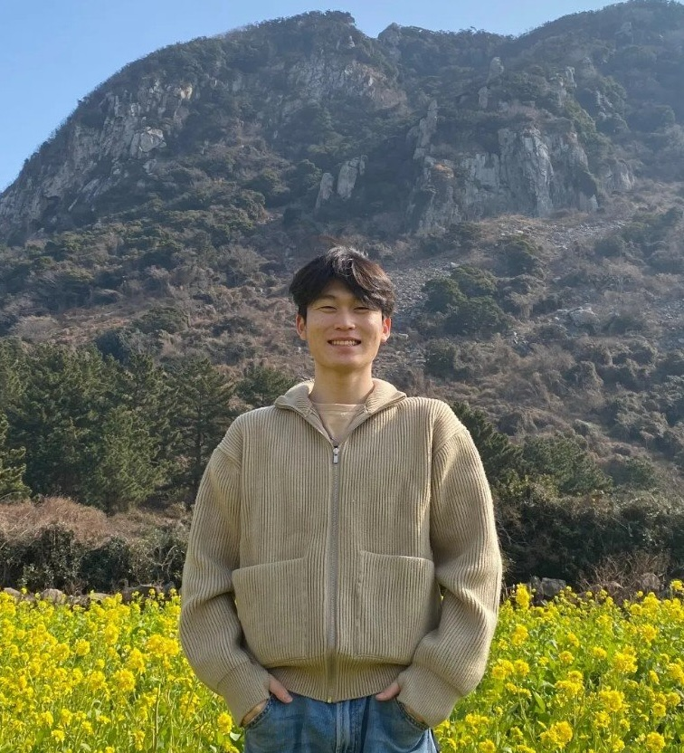

I am an MS/PhD student in AI Robotics at the Robotics and Computer Vision Lab, Sejong University (Advisor: Prof. Yukyung Choi). My research focuses on language-guided robotic manipulation, particularly sub-task decomposition, manipulator action code and policy generation, and VA/VLA-based models, with complementary interests in open-vocabulary object detection, visual grounding, and affordance recognition. I aim to develop robotic systems that robustly connect high-level human intent with low-level actions through multimodal perception and reasoning.
